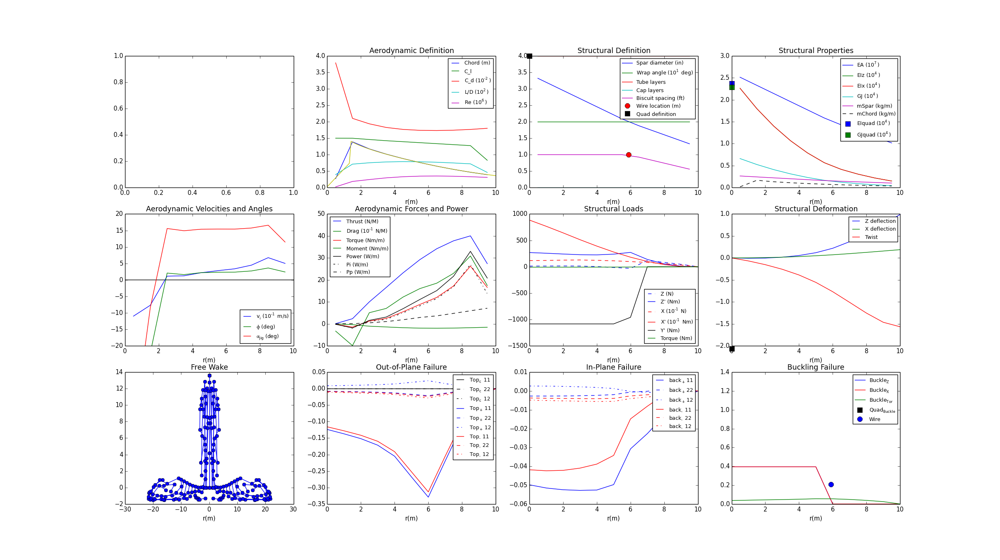
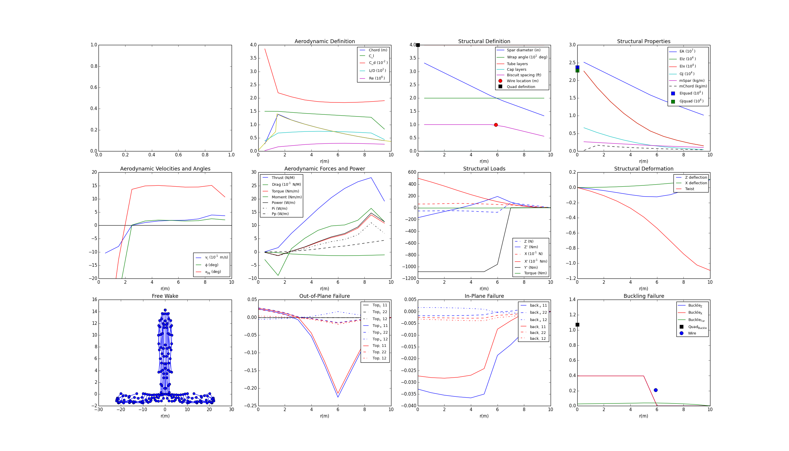

To run the full Atlas model single-point optimization, load the AtlasConfiguration and AeroStructural assemblies from the Atlas plugin. For this optimization, the objective will be to minimize total power with respect to the rotor speed, subject to the hovering constraint that lift must be greater or equal to weight.
from Atlas import AtlasConfiguration, AeroStructural
Next, we set up an AtlasConfiguration assembly that will take into account that the rotor speed Omega is a design variable.
class ConfigOpt(AtlasConfiguration):
""" Atlas configuration for single point optimization """
# inputs for optimizer
Omega_opt = Float(iotype='in', desc='rotor angular velocity')
def execute(self):
super(ConfigOpt, self).execute()
# use optimizer provided value for Omega
self.Omega = self.Omega_opt
Similarly, define an AeroStructural assembly with passthroughs for variables relevant to the optimization problem. There are rotor speed, total mass, total lift, and total power.
class AeroStructuralOpt(AeroStructural):
""" AeroStructural assembly for single point optimization """
def configure(self):
super(AeroStructuralOpt, self).configure()
# replace config with optimizer driven config
self.replace('config', ConfigOpt())
# create passthroughs for variables used by the optimizer
self.create_passthrough('config.Omega_opt')
self.create_passthrough('struc.Mtot')
self.create_passthrough('results.Ttot')
self.create_passthrough('results.Ptot')
Now, define an assembly that will to set up the optimization problem. This assembly will include the AeroStructural assembly defined above, along with an optimization driver, SNOPT. If SNOPT is not available, the optimization will fall back to SLSQP.
class HeliOpt(Assembly):
""" Single point aero-structural optimization """
def configure(self):
# add an optimizer and an AeroStructural assembly
if pyopt_driver and 'SNOPT' in pyopt_driver._check_imports():
self.add("driver", pyopt_driver.pyOptDriver())
self.driver.optimizer = "SNOPT"
self.driver.options = {
# any changes to default SNOPT options?
}
else:
print 'SNOPT not available, using SLSQP'
self.add('driver', SLSQPdriver())
self.add('aso', AeroStructuralOpt())
# objective: minimize total power
self.driver.add_objective('aso.Ptot')
# parameter: rotor speed
self.driver.add_parameter('aso.Omega_opt',
low=0.15*2*pi, high=0.25*2*pi)
self.aso.Omega_opt = 0.2*2*pi # initial value
# constraint: lift >= weight
self.driver.add_constraint('aso.Mtot*9.8-aso.Ttot<=0')
Next, from the makeplot.py file in the “examples” directory in the Atlas plugin source directory, load in the plot_single function. This function will generate a plot of model performance and structural deformation information.
from makeplot import plot_single
To record data about the model to analyze following optimization, load in the JSONCaseRecorder from OpenMDAO:
from openmdao.lib.casehandlers.api import JSONCaseRecorder
Now, we instantiate and run the optimization, then print the results:
opt = set_as_top(HeliOpt())
opt.recorders.append(JSONCaseRecorder(out='heli_opt.json'))
opt.run()
print 'Parameter: Omega =', opt.aso.config.Omega
print 'Constraint: Weight-Lift =', (opt.aso.Mtot*9.8-opt.aso.Ttot)
print 'Objective: Ptot =', opt.aso.Ptot
from openmdao.lib.casehandlers.api import CaseDataset
dataset = CaseDataset('heli_opt.json', 'json')
data = dataset.data.by_case().fetch()
# plot baseline
plot_single(data[0])
# plot optimized
plot_single(data[-1])
The plot_single() calls generate the following figures:
Baseline:
Optimized:
The full Atlas model can also be run by executing the heli_opt.py file in the “examples” directory.
{kind=link}
{kind=link}